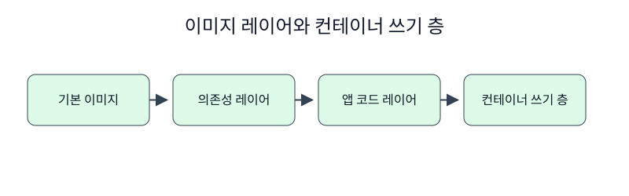

한경 KDT · LLM Agent 개발 & 바이브코딩 · Part 7 · 프로덕션 엔지니어링 · Ch 32 · Docker와 컨테이너
개발 컴퓨터에서 실행되던 서비스가 배포 환경에서 달라지는 이유는 코드만 옮겼기 때문입니다. 애플리케이션은 Python 버전, 설치한 패키지, 운영체제 파일과 함께 실행됩니다. Docker 이미지는 이 실행 조건을 순서가 있는 파일 시스템 층으로 기록합니다. 첫 절에서 이미지가 무엇을 저장하고 컨테이너가 무엇을 덧붙이는지 알아야 다음 절의 Dockerfile을 읽을 수 있습니다.
Ch 1에서 Docker 클라이언트가 데몬에 요청을 보내는 구조를 확인했습니다. 여기서는 설치 여부 확인을 넘어 실제 이미지를 빌드하고 임시 컨테이너를 만듭니다. Ch30의 서비스 구현이 아직 없어도 실습할 수 있도록 이 챕터 폴더의 app.py를 사용합니다. 이 서비스는 /health에 고정된 JSON을 반환하는 최소 FastAPI 애플리케이션입니다.
택배 상자를 포장하는 과정을 떠올려 봅니다. 바닥 상자 위에 Python 실행 환경을 놓고, 그 위에 패키지와 소스 파일을 차례로 놓습니다. 아래 물건을 바꾸면 그 위의 포장도 다시 확인해야 합니다. Docker의 이미지 레이어(image layer)는 Dockerfile 명령이 만든 파일 시스템 변경분입니다. 이미지는 여러 읽기 전용 레이어와 실행 설정을 가리키는 식별 가능한 결과물입니다. 컨테이너(container)는 이미지를 실행하면서 맨 위에 쓰기 가능 레이어를 추가한 프로세스 환경입니다. 따라서 같은 이미지에서 시작한 두 컨테이너는 같은 바닥을 사용하지만 각자의 변경은 분리됩니다. docker history는 이미지가 어떤 명령과 크기 기록으로 구성됐는지 보여 주고, docker diff는 실행 뒤 컨테이너 파일 시스템에 생긴 추가·변경·삭제를 보여 줍니다. 이 둘을 함께 읽으면 빌드 시점의 변경과 실행 시점의 변경을 구분할 수 있습니다.
Dockerfile의 명령은 모두 이미지 기록에 남지만 역할은 다릅니다. RUN, COPY, ADD처럼 파일을 바꾸는 명령은 파일 시스템 레이어를 만들고, CMD와 HEALTHCHECK는 실행 기본값과 상태 검사 같은 이미지 메타데이터를 기록해 0B로 보일 수 있습니다. 이미지는 읽기 전용 레이어와 실행 설정을 담은 템플릿이고, 컨테이너는 그 위에 쓰기 가능한 층을 더한 실행 인스턴스입니다. docker build는 이미지를 만들고 docker run은 그 이미지에서 프로세스를 시작합니다.
컨테이너 안에서 파일을 바꿔도 원본 이미지는 변하지 않습니다. 반대로 Dockerfile을 고쳐 다시 빌드하면 새 이미지 식별자가 생깁니다. 영속 데이터는 컨테이너의 쓰기 층에만 두지 않고 볼륨이나 외부 저장소로 분리해야 컨테이너 교체 뒤에도 남습니다.

노트북은 최적화 이미지를 만든 뒤 docker history로 상위 기록을 읽습니다. 이어서 임시 컨테이너 안의 /tmp/lesson.txt를 만들고 docker diff에서 해당 경로를 확인합니다. 마지막으로 같은 이미지에서 새 컨테이너를 만들면 그 파일이 없다는 사실을 검사합니다. 관찰 대상은 호스트 폴더가 아니라 컨테이너의 쓰기 가능 층입니다.
준비된 Python 3.12 노트북에서 첫 셀부터 Shift+Enter로 하나씩 실행합니다. 안내한 결과를 먼저 확인하고 지정한 값 하나를 바꿔 비교합니다. 문서를 사용하는 실습은 파일 묶음이 필요합니다. 노트북과 실습 파일 함께 받기 · 처음 실습하는 방법. 전체 코드 복사에는 실험 셀 전체가 포함됩니다. 이 HTML에서는 코드를 실행하지 않습니다.
Docker Desktop의 실습 전용 이미지와 스택만 사용해 결과를 확인합니다.
Docker 데몬의 버전을 확인하고 공통 명령 함수를 준비합니다.
이 준비 셀은 현재 폴더와 부모 폴더에서 Dockerfile.baseline이 있는 Ch32 실습 폴더를 찾습니다. run(*args, check=True)은 모든 Docker 명령을 그 폴더에서 실행하고 표준 출력·오류와 종료 코드를 CompletedProcess로 반환합니다. 실패 자체를 관찰하는 셀만 check=False를 전달하며, 마지막에는 Docker Engine이 응답하는지 확인합니다.
# Docker 명령을 일정한 폴더에서 실행하고 실패도 결과로 받습니다.
from pathlib import Path
import json, subprocess, time, urllib.request
# 챕터 폴더와 notebooks 폴더 어디에서 시작해도 제공 자료를 찾습니다.
candidates = [parent / "labs/part7/ch32-docker" for parent in (Path.cwd(), *Path.cwd().parents)]
candidates += [Path.cwd(), Path.cwd().parent]
LAB = next(path for path in candidates if (path / "Dockerfile.baseline").is_file())
def run(*args: str, check: bool = True) -> subprocess.CompletedProcess[str]:
return subprocess.run(args, cwd=LAB, text=True, capture_output=True, check=check)
version = run("docker", "version", "--format", "{{.Server.Version}}")
print("Docker Engine", version.stdout.strip())
assert version.stdout.strip()Docker Engine 29.4.1
최적화 이미지의 기록을 크기와 명령으로 읽습니다.
Dockerfile의 명령은 모두 이미지 기록에 남지만 역할은 다릅니다. RUN, COPY, ADD처럼 파일을 바꾸는 명령은 파일 시스템 레이어를 만들고, CMD와 HEALTHCHECK는 실행 기본값과 상태 검사 같은 메타데이터를 기록해 0B로 보일 수 있습니다. 이미지는 읽기 전용 레이어와 실행 설정을 담은 템플릿이고, 컨테이너는 그 위에 쓰기 가능한 층을 더한 실행 인스턴스입니다.
# 이미지가 없으면 공개 실습 Dockerfile로 먼저 빌드합니다.
run("docker", "build", "-f", "Dockerfile", "-t", "ch32-optimized:local", ".")
history = run("docker", "history", "--no-trunc", "--format", "{{.Size}}|{{.CreatedBy}}", "ch32-optimized:local")
rows = [line for line in history.stdout.splitlines() if line]
print("layer rows", len(rows))
print("\n".join(rows[:5]))
assert len(rows) >= 5layer rows 19
0B|CMD ["uvicorn" "app:app" "--host" "0.0.0.0" "--port" "8000"]
0B|HEALTHCHECK {Test:[CMD-SHELL python -c "import urllib.request; urllib.request.urlopen('http://localhost:8000/health')"] Interval:5s Timeout:2s StartPeriod:0s StartInterval:0s Retries:5}
0B|EXPOSE [8000/tcp]
0B|USER course
0B|ENV PATH=/app/.venv/bin:/usr/local/bin:/usr/local/sbin:/usr/local/bin:/usr/sbin:/usr/bin:/sbin:/bin PYTHONDONTWRITEBYTECODE=1 PYTHONUNBUFFERED=1
같은 이미지에서 만든 두 컨테이너의 변경은 서로 공유되지 않습니다.
# 임시 컨테이너에서 파일을 만들고 변경 내역을 확인합니다.
created = run("docker", "create", "ch32-optimized:local", "python", "-c", "open('/tmp/lesson.txt','w').write('layer')")
cid = created.stdout.strip()
run("docker", "start", "-a", cid)
diff = run("docker", "diff", cid)
print(diff.stdout.strip())
run("docker", "rm", cid)
assert "/tmp/lesson.txt" in diff.stdoutC /tmp A /tmp/lesson.txt
이미지 기록과 컨테이너 변경 기록은 서로 다른 범위를 보여 줍니다.
컨테이너 안에서 파일을 바꿔도 원본 이미지는 변하지 않습니다. 반대로 Dockerfile을 고쳐 다시 빌드하면 새 이미지 식별자가 생깁니다. 영속 데이터는 컨테이너의 쓰기 층에만 두지 않고 볼륨이나 외부 저장소로 분리해야 컨테이너 교체 뒤에도 남습니다.
# 이미지 자체에는 임시 파일이 추가되지 않았는지 새 컨테이너에서 확인합니다.
probe = run("docker", "run", "--rm", "ch32-optimized:local", "python", "-c", "import os; print(os.path.exists('/tmp/lesson.txt'))")
print("new container has file:", probe.stdout.strip())
assert probe.stdout.strip() == "False"new container has file: False
확인할 점 — 명령의 종료 코드와 실제 출력이 본문의 설명과 같은지 확인합니다. 실습 전용 이름을 사용했으므로 다른 Docker 자원을 변경하지 않습니다.
실행 결과에는 이미지 기록이 다섯 줄 이상 나타났고, 첫 임시 컨테이너의 변경 목록에는 /tmp/lesson.txt가 포함됐습니다. 새 컨테이너에서 같은 경로를 검사한 값은 False였습니다. 이 결과는 실행 중 만든 파일이 원본 이미지로 역전파되지 않음을 보여 줍니다. 레이어 행의 크기를 모두 더한 값은 이미지의 저장 공간과 정확히 같지 않을 수 있습니다. 여러 이미지가 같은 레이어를 공유할 수 있고, 표시 방식도 명령에 따라 다르기 때문입니다. 이 실험은 현재 로컬 Docker 저장소에서 보이는 기록을 설명하며 레지스트리 전송량을 측정하지 않습니다.
다음 학습과 이어지는 지점 — 2절에서는 어떤 레이어를 최종 이미지에 남길지 uv 멀티스테이지 빌드로 선택합니다.
이미지와 컨테이너의 차이를 한 문장으로 설명해 보세요.
정답과 해설 — 이미지는 실행 조건을 담은 읽기 전용 결과물이고, 컨테이너는 그 이미지에 쓰기 가능 층과 실행 중인 프로세스를 더한 인스턴스입니다.
임시 컨테이너의 파일이 새 컨테이너에 보이지 않은 이유는 무엇인가요?
정답과 해설 — 각 컨테이너의 쓰기 가능 층이 분리되어 있고 원본 이미지 레이어는 바뀌지 않았기 때문입니다.
docker history와 docker diff는 각각 무엇을 관찰하나요?
정답과 해설 — history는 이미지 빌드 기록을, diff는 특정 컨테이너가 실행 중 파일 시스템에 만든 변경을 관찰합니다.
DB 데이터를 컨테이너 쓰기 층에만 두면 어떤 문제가 생기나요?
정답과 해설 — 컨테이너를 교체하거나 삭제할 때 데이터가 함께 사라질 수 있습니다. 영속 데이터는 볼륨에 둡니다.